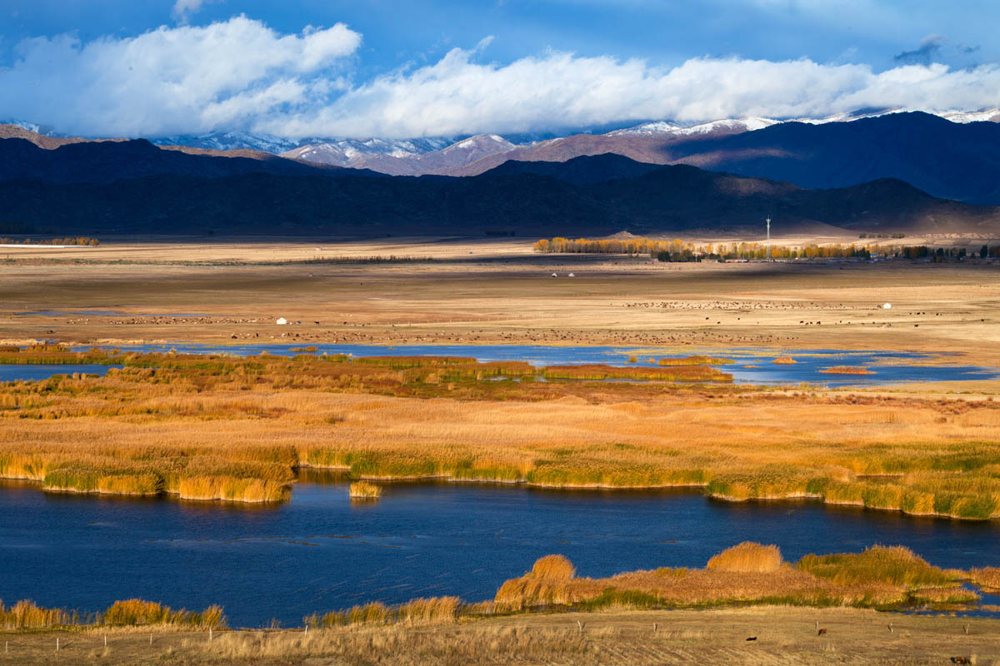
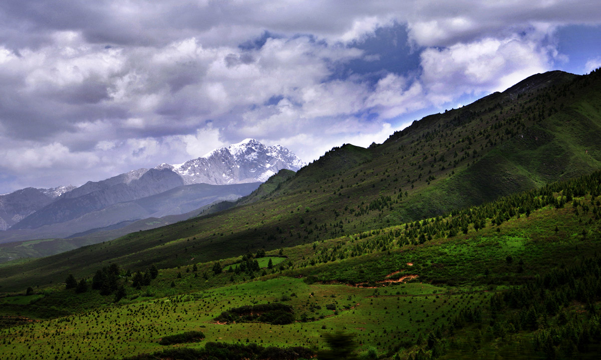
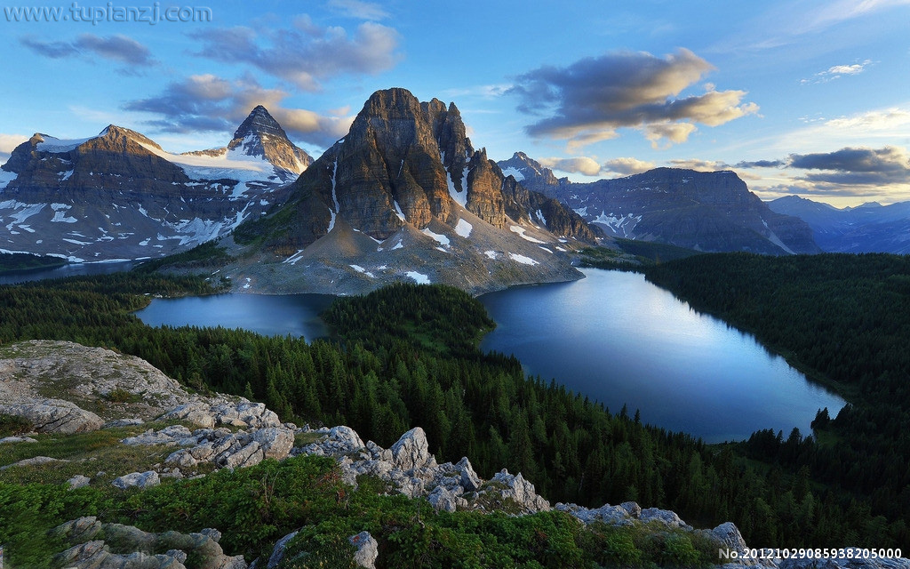
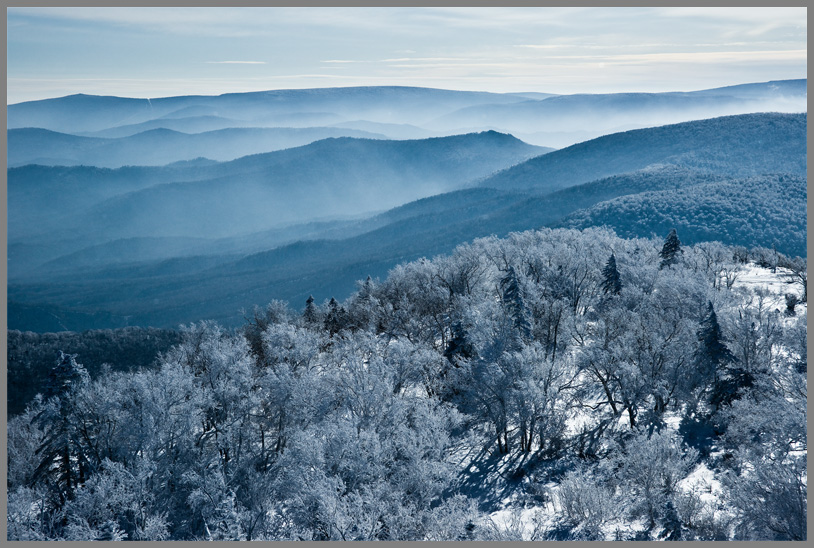

最有诗意的组合

海水与天的交汇和山与水的交汇有着神奇的共通，最宁静的路线组合也
莫过于最默契的搭配，让心在海风的吹拂下在湖光山色的掩映中沉静

西北与西南，是隔着昆仑山脉的相守，有着同样的广袤
西北与西南，是隔着昆仑山脉的相守，有着同样的广袤
与豪情在同一片雪山上，谱写着雪白的誓言与坚韧的壮志雄心

华北与东北不只是空间上的相近，更多的是心灵上的共鸣，在时间
华北与东北不只是空间上的相近，更多的是心灵上的共鸣，在时间
与空间的交汇处，仿佛嗅到很早以前的气息氤氲心间，历久弥新